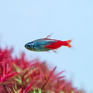
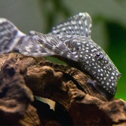
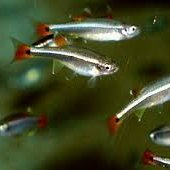
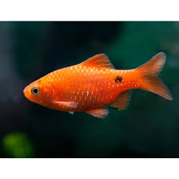
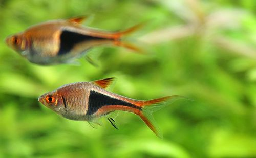
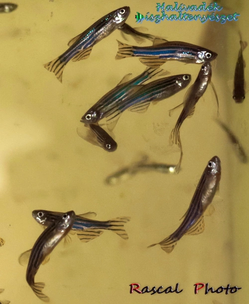
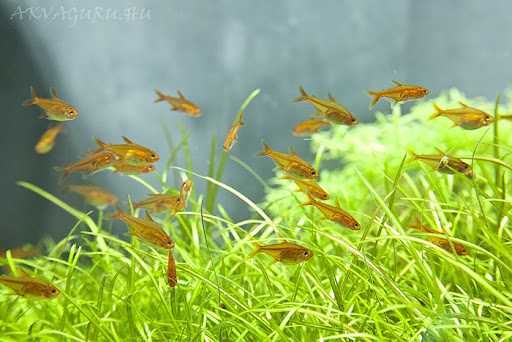
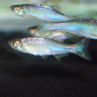
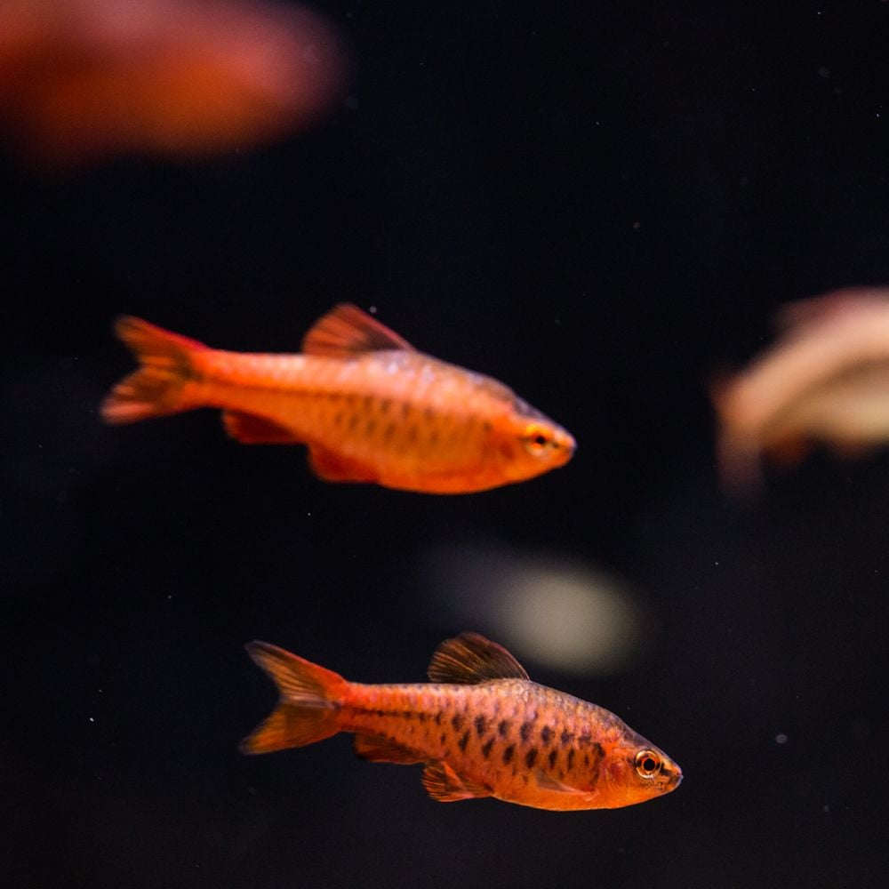
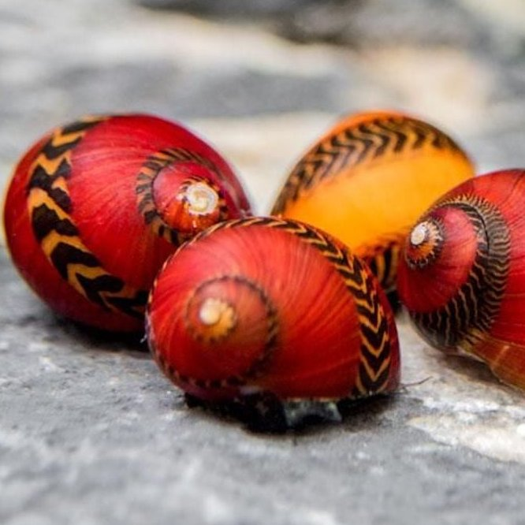

| 𓆟 𓆞Akváriumi élővilág𓆟 𓆞 | ||
|---|---|---|
| Neve | Képe | Tulajdonságai |
| Platti | |
Tulajdonságai𓆟➜ |
| Színpompás dánió | |
Tulajdonságai𓆟➜ |
| Neonhal |  | Tulajdonságai𓆟➜ |
| Ancistrus |  | Tulajdonságai𓆟➜ |
| Gömb molly | |
Tulajdonságai𓆟➜ |
| Ezüst molly | |
Tulajdonságai𓆟➜ |
| Arany molly | |
Tulajdonságai𓆟➜ |
| Fekete molly | |
Tulajdonságai𓆟➜ |
| Ormányos márna | |
Tulajdonságai𓆟➜ |
| Mexikoói kardfarkú | |
Tulajdonságai𓆟➜ |
| Vörösúszójú pontylazac | |
Tulajdonságai𓆟➜ |
| Kolibrihal |  | Tulajdonságai𓆟➜ |
| Rózsás díszmárna |  | Tulajdonságai𓆟➜ |
| Ékfoltos razbóra |  | Tulajdonságai𓆟➜ |
| Zebra dánió |  | Tulajdonságai𓆟➜ |
| Parázslazac |  | Tulajdonságai𓆟➜ |
| Szivárványos guppi | |
Tulajdonságai𓆟➜ |
| Schubert-Díszmárna | |
Tulajdonságai𓆟➜ |
| Színjátszó dánió |  | Tulajdonságai𓆟➜ |
| Vörös karcsú díszmárna |  | Tulajdonságai𓆟➜ |
| Zebra csiga | |
Tulajdonságai𓆟➜ |
| Sisak csiga | |
Tulajdonságai𓆟➜ |
| Hagyma csiga | |
Tulajdonságai𓆟➜ |
| Vörös verseny csiga |  | Tulajdonságai𓆟➜ |